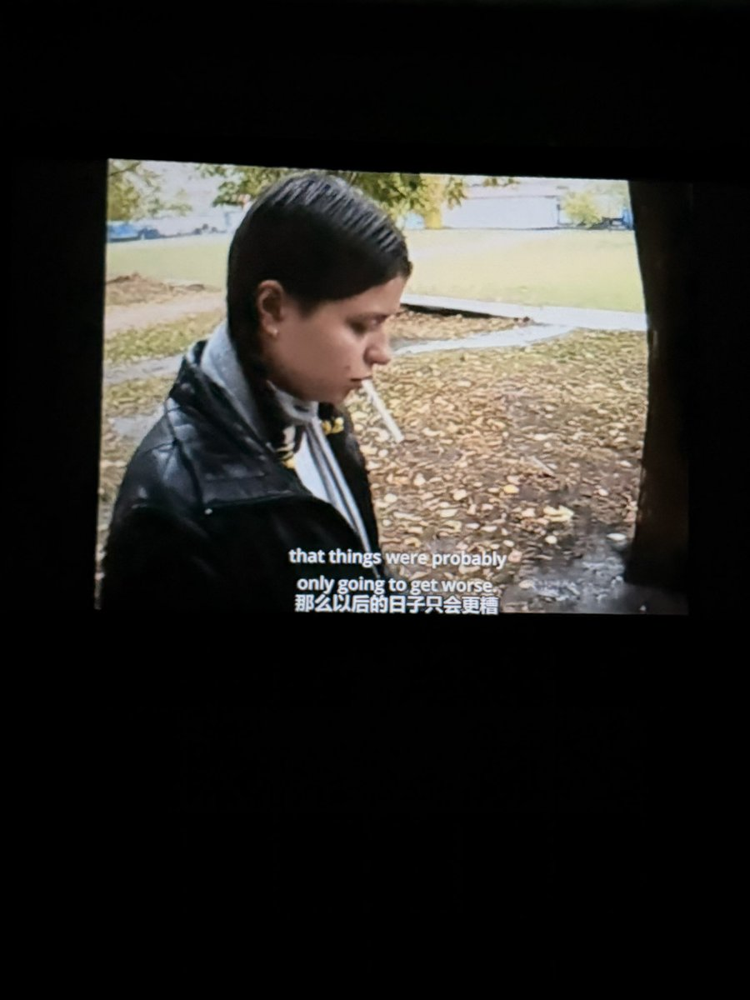

乱
@chidianmaima
重复过无数次的纪录片。几乎让身边的每一个朋友都看过。俄罗斯90年代的人均存在主义抑郁。政治抑郁。如果我们注定得死，如果我们构建我们自己的世界，如果每一个人最终都是独自一人身处于一个无关紧要的世界之中，那么生命有什么意义？我们为什么要活着？我们应该怎样活着？如果并不存在为我们预先设计的蓝图，那么我们每个人就必须构建自己的生命意义。然而，一个人自己创造出来的意义能否坚强到令其能容忍生活？人类这种寻找意义的生物，却被投入到本身毫无意义的宇宙之中。
